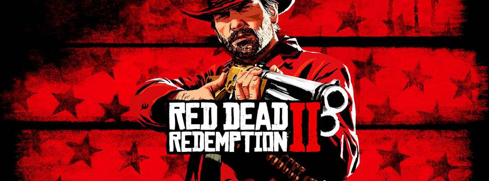

Assassin's Creed Origins
Antigo Egito, uma terra de nobreza e intriga, está desaparecendo em uma luta implacável pelo poder. Desvende segredos obscuros e mitos esquecidos enquanto você retorna ao momento fundador: A Origem da Irmandade dos Assassinos.
Navegue pelo Nilo, descubra os mistérios das pirâmides ou lute contra perigosas facções antigas e bestas selvagens enquanto você explora essa terra gigantesca e imprevisível.

Grand Theft Auto V
Vivencie o jogo em mundo aberto, Grand Theft Auto V.
Quando um malandro de rua, um ladrão de bancos aposentado e um psicopata aterrorizante se envolvem com alguns dos criminosos mais assustadores e loucos do submundo, o governo dos EUA e a indústria do entretenimento, eles devem realizar golpes ousados para sobreviver nessa cidade implacável onde não podem confiar em ninguém, nem mesmo um no outro.

Uncharted 4: A thief's end
Uncharted 4 combina o tipo de beleza realista que faz você parar o que está fazendo, com um nível de historias de filmes blockbuster que raramente é visto nos games. A aventura leva você a vários países diversos, descobrindo uma misteriosa e fascinante narrativa sobre política, traição, piratas, relacionamentos e responsabilidade. A ação lisa em terceira pessoa é espaçada por momentos genuinamente sensíveis de seus personagens. Além disso, há também um sólido componente multiplayer. Se você é fã de Nathan Drake ou de games de ação focados em narrativa, este game é indispensável.
Tomb Raider
Tomb Raider traz a história de como a aclamada heroína dos games começou sua carreira. Ou melhor: contar a história de como foi a primeira aventura de Lara Croft que a tornou a caçadora de tumbas que tanto conhecemos.
Tudo se inicia quando ela está perdida em uma ilha no meio do Pacífico. Sozinha, ela deverá sobreviver utilizando os poucos recursos ao seu redor, aprendendo da maneira mais difícil e tendo sua vida por um fio diversas vezes. Acompanhe de perto a evolução desta personagem: desde uma garota assustada e perdida até uma mulher corajosa, capaz de encarar diversos perigos.

Ratchet & Clank
Explora mais a fundo a história da origem dos personagens e moderniza a partida original. Conta com vários planetas novos, chefes inteiramente novos, nova partida do Clank, novas sequências de voo e muito mais e com recursos visuais completamente novos.

God of War
Sua vingança contra os deuses do Olimpo agora é passado, em God of War, Kratos vive como um homem comum nas terras dos deuses Nórdicos, ensinando seu filho a sobreviver a todos os perigos que aparecerem por sua frente. Kratos está empenhado em passar todos seus conhecimentos ao seu filho, que está determinado a conquistar o respeito de seu pai. Finalmente o assassino de deuses tem a oportunidade de corrigir seus erros do passado.
God of War traz um cenário totalmente diferente dos jogos anteriores, repleto de florestas e áreas montanhosas, repleto de criaturas e deuses da mitologia nórdica. Kratos agora possui um machado poderoso e mágico que traz muita ação no combate corpo a corpo. Além de possuir outros armamentos que fazem com que este grande guerreiro torne-se ainda mais poderoso e destrutivo.
É um novo começo para Kratos. Vivendo como um homem longe da sombra dos deuses, ele se aventura pelas selvagens florestas nórdicas com seu filho Atreus, lutando para cumprir uma missão profundamente pessoal. Vivendo como um homem, fora da sombra dos deuses, Kratos deve se adaptar a terras desconhecidas, ameaças inesperadas e a uma segunda oportunidade de ser pai. Junto ao seu filho, Atreus, os dois vão se aventurar pelas selvagens florestas nórdicas e lutar para cumprir uma missão profundamente pessoal.
Red Dead Redemption 2
Estados Unidos, 1899. O fim da era do velho oeste começou, e as autoridades estão caçando as últimas gangues de fora da lei que restam.
Os que não se rendem, nem sucumbem, são mortos. Depois de tudo dar errado durante um roubo em uma cidade do oeste chamada Blackwater, Arthur Morgan e a gangue Van der Linde são forçados a fugir. Com agentes federais e os melhores caçadores de recompensas no seu encalço, a gangue precisa roubar, assaltar e lutar para sobreviver no impiedoso coração dos Estados Unidos. Conforme divisões internas profundas ameaçam despedaçar a gangue, Arthur deve fazer uma escolha entre os seus próprios ideais e a lealdade à gangue que o criou. Red Dead Redemption 2 é uma história épica sobre a vida nos Estados Unidos no alvorecer dos tempos modernos.
